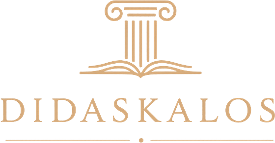

Corpus Analysis
The pipeline processes annotated Ancient Greek treebanks — sample texts from the Perseus Digital Library or your own XML uploads — and extracts lexical frequencies, morphological patterns, and syntactic constructions.

Didaskalos is a corpus-driven pipeline that generates personalized Ancient Greek textbooks from the linguistic features of your selected texts. Instead of a fixed curriculum, lessons follow the vocabulary, morphology, and syntax actually attested in your corpus — and every example and exercise comes directly from authentic Greek.
The system integrates three main components, all driven by the frequency and distribution of linguistic features in your texts.
The pipeline processes annotated Ancient Greek treebanks — sample texts from the Perseus Digital Library or your own XML uploads — and extracts lexical frequencies, morphological patterns, and syntactic constructions.
Frequency data drives the syllabus: grammatical structures are ranked by how often they appear in your corpus, so the lessons focus on what actually shows up most in the texts you want to read.
The textbook is composed of self-contained modules covering grammatical and morphological categories, with examples and exercises drawn straight from the source texts.
Start from the bundled Perseus treebanks, paste treebank URLs, or upload your own XML files. The app builds a combined token table and computes a frequency-based syllabus from whatever you give it.
Choose a case-based textbook that explains nouns and adjectives case by case, or a declension-based one that classifies every noun and adjective into declension classes and orders the lessons by how frequent each class is in your corpus.
Exercises are generated exclusively from authentic sentences, ranked by difficulty using sentence length and word frequency. Download the finished textbook as Markdown or HTML, easy to tweak or restyle.
The grammar explanations are currently LLM-generated first drafts, produced with a Retrieval-Augmented Generation (RAG) pipeline over standard reference grammars, including Smyth's Greek Grammar and Crosby & Schaeffer. I plan to refine them manually over time.
The generation pipeline is language-independent: the interface and the generated textbooks are available in English and Persian, and more languages mainly require translating the grammar modules.
The core infrastructure is still being built, so expect rough edges — and more features soon. The project is released under CC BY-NC 4.0.
دیداسکالوس یک ابزار پیکرهبنیاد است که بر پایهٔ ویژگیهای زبانی متنهای انتخابی شما، کتابهای درسی شخصیسازیشده تولید میکند. در نتیجه، برنامهی درسی شما تنها شامل واژگان، تمرینات، صرف و نحوی خواهد بود که واقعاً در پیکرهٔ شما آمدهاند — و همهٔ مثالها و تمرینها مستقیماً از همان متونی که انتخاب کردهاید برگرفته شده و به ترتیب بسامد واژگانی و صرفی مرتب میشوند.
دیداسکالوس سه وجه اصلی را در هم میآمیزد و همهٔ آنها بر پایهٔ بسامد و توزیع ویژگیهای زبانی در متنهای شما کار میکنند.
پردازش پیکرههای درختی حاشیهگذاریشدهٔ یونانی باستان را پردازش میکند — نمونهمتنهای کتابخانهٔ دیجیتال Perseus یا فایلهای XML خودتان — و بسامد واژگان، الگوهای صرفی و ساختهای نحوی را استخراج میکند.
دادههای بسامدی برنامهٔ درسی را شکل میدهند: ساختارهای دستوری بر اساس میزان حضورشان در پیکرهٔ شما رتبهبندی میشوند تا درسها بر آنچه واقعاً در متنهای موردعلاقهٔ شما بیشتر دیده میشود تمرکز کنند.
کتاب از ماژولهای مستقل تشکیل میشود که مقولههای دستوری و صرفی را پوشش میدهند، همراه با مثالها و تمرینهایی که مستقیماً از متنهای اصلی گرفته شدهاند.
از پیکرههای درختی Perseus که همراه برنامه است شروع کنید، نشانی پیکرهها را وارد کنید، یا فایلهای XML خودتان را بارگذاری کنید. برنامه جدول واژهها را میسازد و برنامهٔ درسی بسامدمحور را از هر آنچه به آن بدهید محاسبه میکند.
کتاب مبتنی بر حالت را انتخاب کنید که اسمها و صفتها را حالتبهحالت توضیح میدهد، یا کتاب مبتنی بر صرف را که هر اسم و صفت را در ردههای صرفی دستهبندی میکند و درسها را بر پایهٔ بسامد هر رده در پیکرهٔ شما مرتب میسازد.
تمرینها تنها از جملههای اصیل ساخته میشوند و بر اساس دشواری — یعنی طول جمله و بسامد واژهها — رتبهبندی میشوند. کتاب نهایی را با فرمت Markdown یا HTML دانلود کنید تا ویرایش یا تغییر ظاهر آن آسان باشد.
توضیحهای دستوری در حال حاضر پیشنویسهای اولیهای هستند که با یک مدل زبانی (LLM) و در قالب RAG بر پایهٔ دستورهای مرجع، از جمله دستور زبان یونانی Smyth و Crosby & Schaeffer، تولید شدهاند. قصد دارم به مرور آنها را دستی ویرایش و پاکسازی کنم.
خط لولهٔ تولید مستقل از زبان است: رابط برنامه و کتابهای تولیدشده به انگلیسی و فارسی در دسترساند و افزودن زبانهای دیگر بیشتر به ترجمهٔ ماژولهای دستوری نیاز دارد.
زیرساخت اصلی هنوز در حال ساخت است، پس منتظر کاستیهایی باشید — و بهزودی امکانات بیشتر. این پروژه با مجوز CC BY-NC 4.0 منتشر میشود.